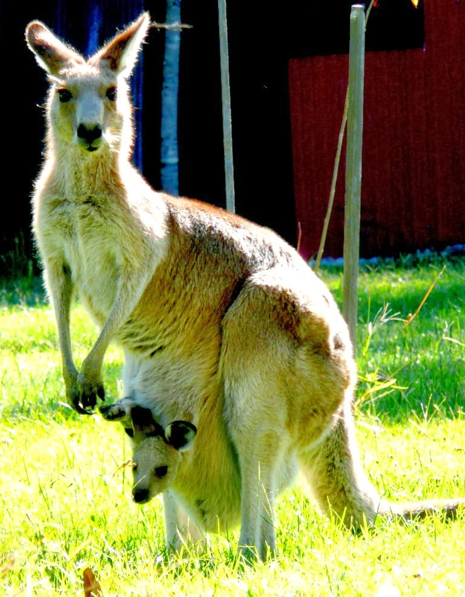

the kangaroo, any of six large species of Australian marsupials noted for hopping and bouncing on their hind legs. The term kangaroo, most specifically used, refers to the eastern gray kangaroo, the western gray kangaroo, and the red kangaroo, as well as to the antilopine kangaroo and two species of wallaroo (see below). Less specifically, kangaroo refers to all 14 species in the genus Macropus, some of which are called wallabies. In its broadest usage, kangaroo refers to any member of the family Macropodidae, which comprises about 65 species, including tree kangaroos and the quokka; rat kangaroos are classified into “sister” familes, Potoroidae and Hypsiprymnodontidae. The Macropodidae are found in Australia (including Tasmania and other offshore islands, such as Kangaroo Island), New Guinea, and the islands east to the Bismarck Archipelago. Several species have been introduced into New Zealand.
